The integration with sf and addition of several spatial network specific functions in sfnetworks allow to easily filter information from a network based on spatial relationships, and to join new information into a network based on spatial relationships. This vignette presents several ways to do that.
Both spatial filters and spatial joins use spatial predicate functions to examine spatial relationships. Spatial predicates are mathematically defined binary spatial relations between two simple feature geometries. Often used examples include the predicate equals (geometry x is equal to geometry y) and the predicate intersects (geometry x has at least one point in common with geometry y). For an overview of all available spatial predicate functions in sf and links to detailed explanations of the underlying algorithms, see here.
Spatial filters
Using st_filter
Information can be filtered from a network by using spatial predicate functions inside the sf function sf::st_filter(), which works as follows: the function is applied to a set of geometries A with respect to another set of geometries B, and removes features from A based on their spatial relation with the features in B. A practical example: when using the predicate intersects, all geometries in A that do not intersect with any geometry in B are removed.
When applying sf::st_filter() to a sfnetwork, it is internally applied to the active element of that network. For example: filtering information from a network A with activated nodes, using a set of polygons B and the predicate intersects, will remove those nodes that do not intersect with any of the polygons in B from the network. When edges are active, it will remove the edges that do not intersect with any of the polygons in B from the network.
Although the filter is applied only to the active element of the network, it may also affect the other element. When nodes are removed, their incident edges are removed as well. However, when edges are removed, the nodes at their endpoints remain, even if they don’t have any other incident edges. This behavior is inherited from tidygraph and understandable from a graph theory point of view: by definition nodes can exist peacefully in isolation, while edges can never exist without nodes at their endpoints.
p1 = st_point(c(4151358, 3208045))
p2 = st_point(c(4151340, 3207520))
p3 = st_point(c(4151756, 3207506))
p4 = st_point(c(4151774, 3208031))
poly = st_multipoint(c(p1, p2, p3, p4)) %>%
st_cast("POLYGON") %>%
st_sfc(crs = 3035)
net = as_sfnetwork(roxel) %>%
st_transform(3035)
filtered = st_filter(net, poly, .pred = st_intersects)
plot(net, col = "grey")
plot(poly, border = "red", lty = 4, lwd = 4, add = TRUE)
plot(filtered)
filtered = net %>%
activate("edges") %>%
st_filter(poly, .pred = st_intersects)
plot(net, col = "grey")
plot(poly, border = "red", lty = 4, lwd = 4, add = TRUE)
plot(filtered)

The isolated nodes that remain after filtering the edges can be easily removed using a combination of a regular dplyr::filter() verb and the tidygraph::node_is_isolated() query function.
filtered = net %>%
activate("edges") %>%
st_filter(poly, .pred = st_intersects) %>%
activate("nodes") %>%
filter(!node_is_isolated())
plot(net, col = "grey")
plot(poly, border = "red", lty = 4, lwd = 4, add = TRUE)
plot(filtered)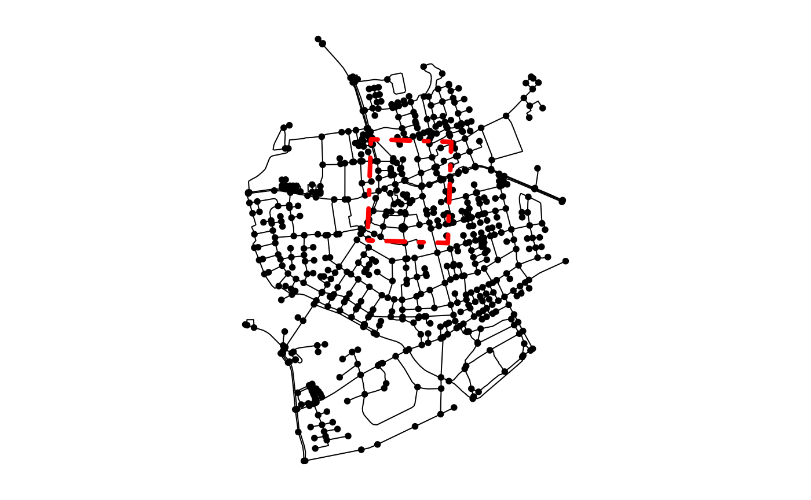
For non-spatial filters applied to attribute columns, simply use dplyr::filter() instead of sf::st_filter().
Using spatial node and edge query functions
In tidygraph, filtering information from networks is done by using specific node or edge query functions inside the dplyr::filter() verb. An example was already shown above, where isolated nodes were removed from the network.
In sfnetworks, several spatial predicates are implemented as node and edge query functions such that you can also do spatial filtering in tidygraph style. See here for a list of all implemented spatial node query functions, and here for the spatial edge query functions.
filtered = net %>%
activate("edges") %>%
filter(edge_intersects(poly)) %>%
activate("nodes") %>%
filter(!node_is_isolated())
plot(net, col = "grey")
plot(poly, border = "red", lty = 4, lwd = 4, add = TRUE)
plot(filtered)

A nice application of this in road networks is to find underpassing and overpassing roads (i.e. edges that cross other edges but are not connected at that point). As we can see in the example below, such roads are not present in our Roxel data, which results in a network without edges.
The tidygraph::.E() function used in the example makes it possible to directly access the complete edges table inside verbs. In this case, that means that for each edge we evaluate if it crosses with any other edge in the network. Similarly, we can use tidygraph::.N() to access the nodes table and tidygraph::.G() to access the network object as a whole.
net %>%
activate("edges") %>%
filter(edge_crosses(.E()))#> # A sfnetwork with 701 nodes and 0 edges
#> #
#> # CRS: EPSG:3035
#> #
#> # A rooted forest with 701 trees with spatially explicit edges
#> #
#> # Edge Data: 0 x 5 (active)
#> # … with 5 variables: from <int>, to <int>, name <chr>, type <fct>,
#> # geometry <GEOMETRY [m]>
#> #
#> # Node Data: 701 x 1
#> # Geometry type: POINT
#> # Dimension: XY
#> # Bounding box: xmin: 4150707 ymin: 3206375 xmax: 4152367 ymax: 3208565
#> geometry
#> <POINT [m]>
#> 1 (4151491 3207923)
#> 2 (4151474 3207946)
#> 3 (4151398 3207777)
#> # … with 698 more rows
If you just want to store the information about the investigated spatial relation, without filtering the network, you can also use the spatial node and edge query functions inside a dplyr::mutate() verb.
net %>%
mutate(in_poly = node_intersects(poly))#> # A sfnetwork with 701 nodes and 851 edges
#> #
#> # CRS: EPSG:3035
#> #
#> # A directed multigraph with 14 components with spatially explicit edges
#> #
#> # Node Data: 701 x 2 (active)
#> # Geometry type: POINT
#> # Dimension: XY
#> # Bounding box: xmin: 4150707 ymin: 3206375 xmax: 4152367 ymax: 3208565
#> geometry in_poly
#> <POINT [m]> <lgl>
#> 1 (4151491 3207923) TRUE
#> 2 (4151474 3207946) TRUE
#> 3 (4151398 3207777) TRUE
#> 4 (4151370 3207673) TRUE
#> 5 (4151408 3207539) TRUE
#> 6 (4151421 3207592) TRUE
#> # … with 695 more rows
#> #
#> # Edge Data: 851 x 5
#> # Geometry type: LINESTRING
#> # Dimension: XY
#> # Bounding box: xmin: 4150707 ymin: 3206375 xmax: 4152367 ymax: 3208565
#> from to name type geometry
#> <int> <int> <chr> <fct> <LINESTRING [m]>
#> 1 1 2 Havixbecker St… resident… (4151491 3207923, 4151474 3207946)
#> 2 3 4 Pienersallee secondary (4151398 3207777, 4151390 3207727, 4151…
#> 3 5 6 Schulte-Bernd-… resident… (4151408 3207539, 4151417 3207573, 4151…
#> # … with 848 more rows
Besides predicate query functions, you can also use the coordinate query functions for spatial filters on the nodes. For example:
v = 4152000
l = st_linestring(rbind(c(v, st_bbox(net)["ymin"]), c(v, st_bbox(net)["ymax"])))
filtered_by_coords = net %>%
activate("nodes") %>%
filter(node_X() > v)
plot(net, col = "grey")
plot(l, col = "red", lty = 4, lwd = 4, add = TRUE)
plot(net, col = "grey")
plot(filtered_by_coords, col = "red", add = TRUE)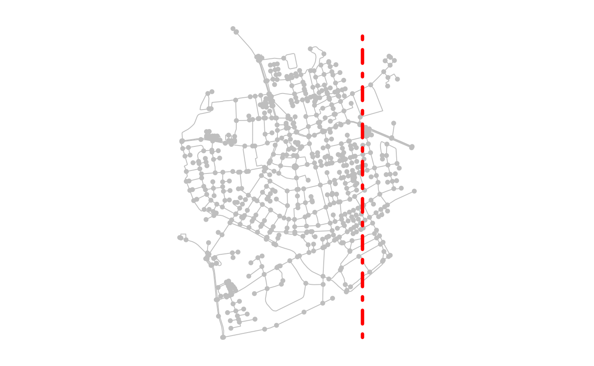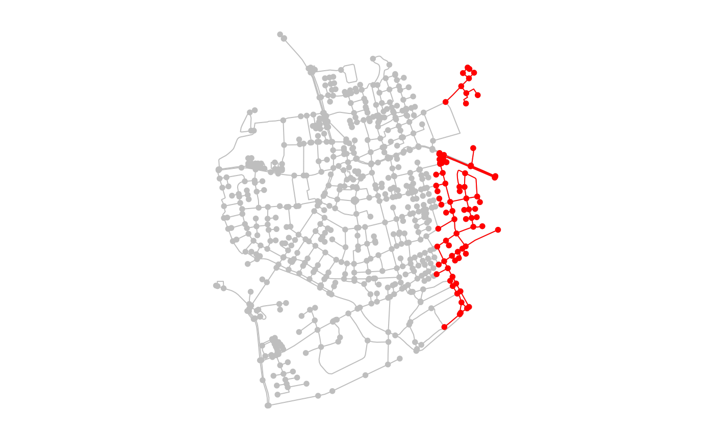
Cropping
Another way to spatially filter features is by using the sf function sf::st_crop(), which works as follows: the function is applied to a set of geometries A with respect to another set of geometries B. It removes features from A that do not intersect with the bounding box of B. On top of that, the geometries of those features from A that remain are updated such that only their intersection with the bounding box of B is kept.
In the case of the nodes, this is equal to a filter using the bounding box of B and the predicate intersects. However, in the case of the edges, there is a difference. The linestring geometries of the edges that intersect with the bounding box of B are cut such that only those parts that are really inside the bounding box of B remain. To preserve a valid spatial network structure, sfnetworks adds new nodes at these cut locations.
cropped = net %>%
activate("edges") %>%
st_crop(poly) %>%
activate("nodes") %>%
filter(!node_is_isolated())
#> Warning: attribute variables are assumed to be spatially constant throughout all
#> geometries
plot(net, col = "grey")
plot(poly, border = "red", lty = 4, lwd = 4, add = TRUE)
plot(filtered, col = "grey")
plot(poly, border = "red", lty = 4, lwd = 4, add = TRUE)
plot(cropped, add = TRUE)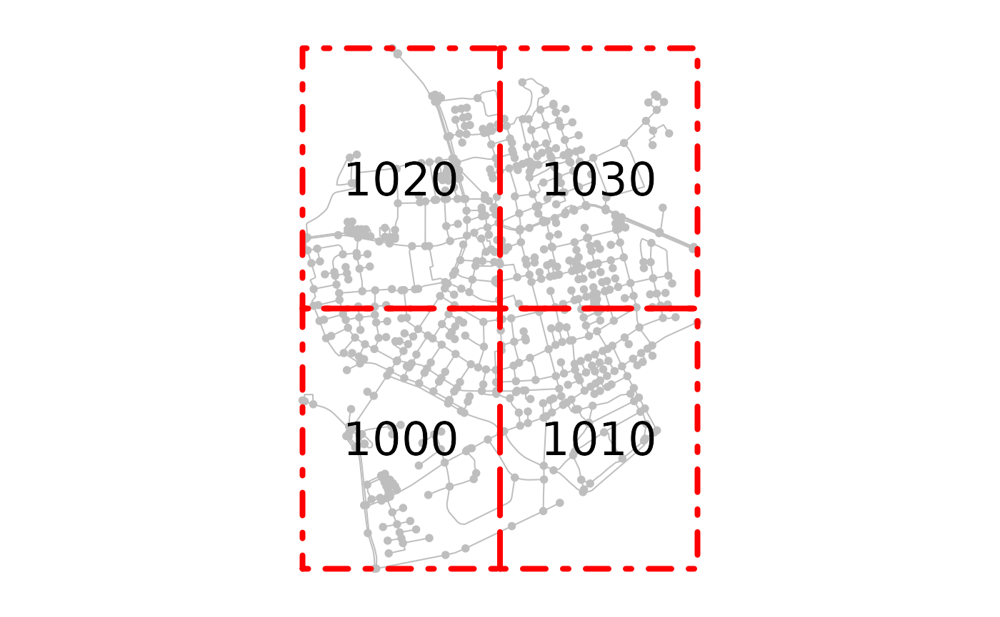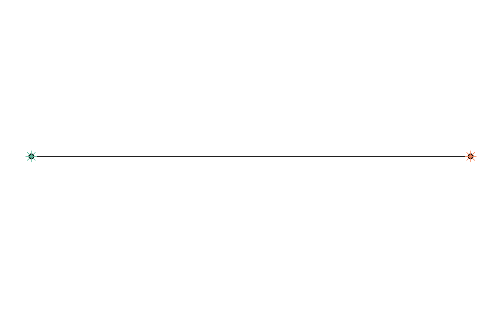
Spatial joins
Using st_join
Information can be spatially joined into a network by using spatial predicate functions inside the sf function sf::st_join(), which works as follows: the function is applied to a set of geometries A with respect to another set of geometries B, and attaches feature attributes from features in B to features in A based on their spatial relation. A practical example: when using the predicate intersects, feature attributes from feature y in B are attached to feature x in A whenever x intersects with y.
When applying sf::st_join() to a sfnetwork, it is internally applied to the active element of that network. For example: joining information into network A with activated nodes, from a set of polygons B and using the predicate intersects, will attach attributes from a polygon in B to those nodes that intersect with that specific polygon. When edges are active, it will attach the same information but to the intersecting edges instead.
Lets show this with an example in which we first create imaginary postal code areas for the Roxel dataset.
codes = net %>%
st_make_grid(n = c(2, 2)) %>%
st_as_sf() %>%
mutate(post_code = as.character(seq(1000, 1000 + n() * 10 - 10, 10)))
joined = st_join(net, codes, join = st_intersects)
joined#> # A sfnetwork with 701 nodes and 851 edges
#> #
#> # CRS: EPSG:3035
#> #
#> # A directed multigraph with 14 components with spatially explicit edges
#> #
#> # Node Data: 701 x 2 (active)
#> # Geometry type: POINT
#> # Dimension: XY
#> # Bounding box: xmin: 4150707 ymin: 3206375 xmax: 4152367 ymax: 3208565
#> geometry post_code
#> <POINT [m]> <chr>
#> 1 (4151491 3207923) 1020
#> 2 (4151474 3207946) 1020
#> 3 (4151398 3207777) 1020
#> 4 (4151370 3207673) 1020
#> 5 (4151408 3207539) 1020
#> 6 (4151421 3207592) 1020
#> # … with 695 more rows
#> #
#> # Edge Data: 851 x 5
#> # Geometry type: LINESTRING
#> # Dimension: XY
#> # Bounding box: xmin: 4150707 ymin: 3206375 xmax: 4152367 ymax: 3208565
#> from to name type geometry
#> <int> <int> <chr> <fct> <LINESTRING [m]>
#> 1 1 2 Havixbecker St… resident… (4151491 3207923, 4151474 3207946)
#> 2 3 4 Pienersallee secondary (4151398 3207777, 4151390 3207727, 4151…
#> 3 5 6 Schulte-Bernd-… resident… (4151408 3207539, 4151417 3207573, 4151…
#> # … with 848 more rows
plot(net, col = "grey")
plot(codes, col = NA, border = "red", lty = 4, lwd = 4, add = TRUE)
text(st_coordinates(st_centroid(st_geometry(codes))), codes$post_code, cex = 2)
plot(st_geometry(joined, "edges"))
plot(st_as_sf(joined, "nodes"), pch = 20, add = TRUE) 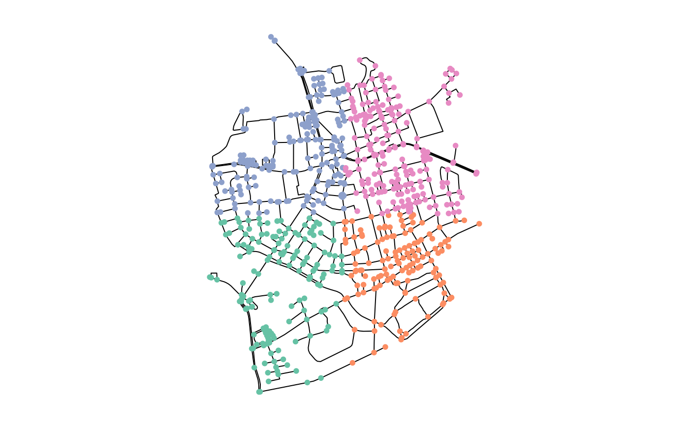
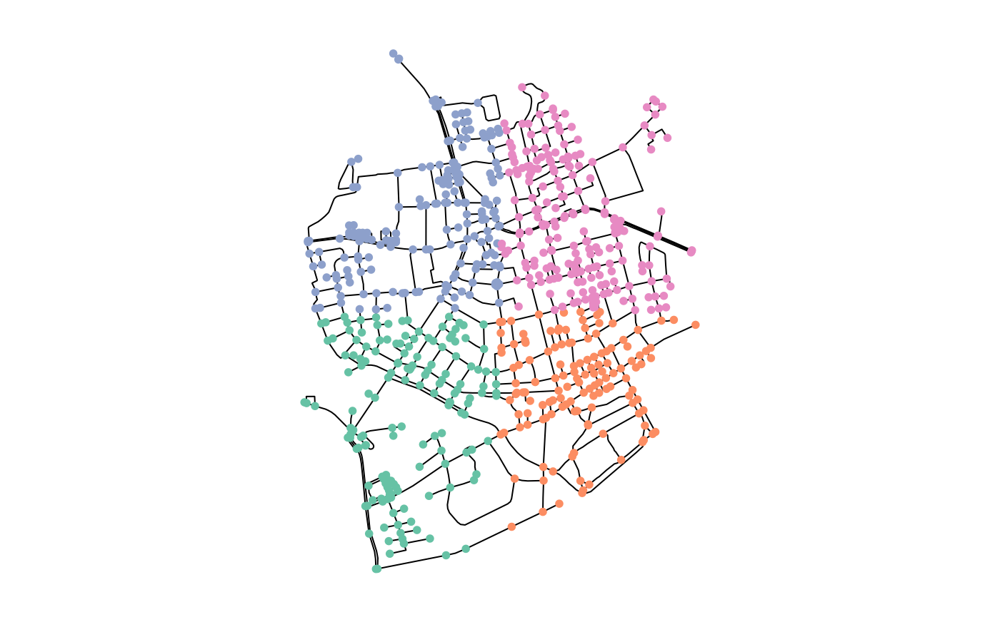
In the example above, the polygons are spatially distinct. Hence, each node can only intersect with a single polygon. But what would happen if we do a join with polygons that overlap? The attributes from which polygon will then be attached to a node that intersects with multiple polygons at once? In sf this issue is solved by duplicating such a point as much times as the number of polygons it intersects with, and attaching attributes of each intersecting polygon to one of these duplicates. This approach does not fit the network case, however. An edge can only have a single node at each of its endpoints, and thus, the duplicated nodes will be isolated and will be redundant in the network structure. Therefore, sfnetworks will only join the information from the first match whenever there are multiple matches for a single node. A warning is given in that case such that you are aware of the fact that not all information was joined into the network.
Note that in the case of joining on the edges, multiple matches per edge are not a problem for the network structure. It will simply duplicate the edge (i.e. creating a set of parallel edges) whenever this occurs.
two_equal_polys = st_as_sf(c(poly, poly)) %>%
mutate(foo = c("a", "b"))
# Join on nodes gives a warning that only the first match per node is joined.
# The number of nodes in the resulting network remains the same.
st_join(net, two_equal_polys, join = st_intersects)
#> Warning: Multiple matches were detected from some nodes. Only the first match is
#> considered#> # A sfnetwork with 701 nodes and 851 edges
#> #
#> # CRS: EPSG:3035
#> #
#> # A directed multigraph with 14 components with spatially explicit edges
#> #
#> # Node Data: 701 x 2 (active)
#> # Geometry type: POINT
#> # Dimension: XY
#> # Bounding box: xmin: 4150707 ymin: 3206375 xmax: 4152367 ymax: 3208565
#> geometry foo
#> <POINT [m]> <chr>
#> 1 (4151491 3207923) a
#> 2 (4151474 3207946) a
#> 3 (4151398 3207777) a
#> 4 (4151370 3207673) a
#> 5 (4151408 3207539) a
#> 6 (4151421 3207592) a
#> # … with 695 more rows
#> #
#> # Edge Data: 851 x 5
#> # Geometry type: LINESTRING
#> # Dimension: XY
#> # Bounding box: xmin: 4150707 ymin: 3206375 xmax: 4152367 ymax: 3208565
#> from to name type geometry
#> <int> <int> <chr> <fct> <LINESTRING [m]>
#> 1 1 2 Havixbecker St… resident… (4151491 3207923, 4151474 3207946)
#> 2 3 4 Pienersallee secondary (4151398 3207777, 4151390 3207727, 4151…
#> 3 5 6 Schulte-Bernd-… resident… (4151408 3207539, 4151417 3207573, 4151…
#> # … with 848 more rows
# Join on edges duplicates edges that have multiple matches.
# The number of edges in the resulting network is higher than in the original.
net %>%
activate("edges") %>%
st_join(two_equal_polys, join = st_intersects)#> # A sfnetwork with 701 nodes and 989 edges
#> #
#> # CRS: EPSG:3035
#> #
#> # A directed multigraph with 14 components with spatially explicit edges
#> #
#> # Edge Data: 989 x 6 (active)
#> # Geometry type: LINESTRING
#> # Dimension: XY
#> # Bounding box: xmin: 4150707 ymin: 3206375 xmax: 4152367 ymax: 3208565
#> from to name type geometry foo
#> <int> <int> <chr> <fct> <LINESTRING [m]> <chr>
#> 1 1 2 Havixbecker … residen… (4151491 3207923, 4151474 3207946) a
#> 2 1 2 Havixbecker … residen… (4151491 3207923, 4151474 3207946) b
#> 3 3 4 Pienersallee seconda… (4151398 3207777, 4151390 3207727, 4… a
#> 4 3 4 Pienersallee seconda… (4151398 3207777, 4151390 3207727, 4… b
#> 5 5 6 Schulte-Bern… residen… (4151408 3207539, 4151417 3207573, 4… a
#> 6 5 6 Schulte-Bern… residen… (4151408 3207539, 4151417 3207573, 4… b
#> # … with 983 more rows
#> #
#> # Node Data: 701 x 1
#> # Geometry type: POINT
#> # Dimension: XY
#> # Bounding box: xmin: 4150707 ymin: 3206375 xmax: 4152367 ymax: 3208565
#> geometry
#> <POINT [m]>
#> 1 (4151491 3207923)
#> 2 (4151474 3207946)
#> 3 (4151398 3207777)
#> # … with 698 more rows
For non-spatial joins based on attribute columns, simply use a join function from dplyr (e.g. dplyr::left_join() or dplyr::inner_join()) instead of sf::st_join().
Snapping points to their nearest node before joining
Another network specific use-case of spatial joins would be to join information from external points of interest (POIs) into the nodes of the network. However, to do so, such points need to have exactly equal coordinates to one of the nodes. Often this will not be the case. To solve such situations, you will first need to update the coordinates of the POIs to match those of their nearest node. This process is also called snapping. To find the nearest node in the network for each POI, you can use the sf function sf::st_nearest_feature().
node1 = st_point(c(0, 0))
node2 = st_point(c(1, 0))
edge = st_sfc(st_linestring(c(node1, node2)))
net = as_sfnetwork(edge)
pois = data.frame(poi_type = c("bakery", "butcher"),
x = c(0, 0.6), y = c(0.1, 0.1)) %>%
st_as_sf(coords = c("x", "y"))
# Find indices of nearest nodes.
nearest_nodes = st_nearest_feature(pois, net)
# Replace geometries.
snapped_pois = pois %>%
st_set_geometry(st_geometry(net)[nearest_nodes])
plot(net, cex = 2, lwd = 4)
plot(pois, pch = 8, cex = 2, lwd = 2, add = TRUE)
plot(st_nearest_points(pois[1, ], net)[nearest_nodes[1]],
col = "grey", lty = 2, lwd = 2, add = TRUE)
plot(st_nearest_points(pois[2, ], net)[nearest_nodes[2]],
col = "grey", lty = 2, lwd = 2, add = TRUE)
plot(net, cex = 2, lwd = 4)
plot(snapped_pois, pch = 8, cex = 2, lwd = 2, add = TRUE)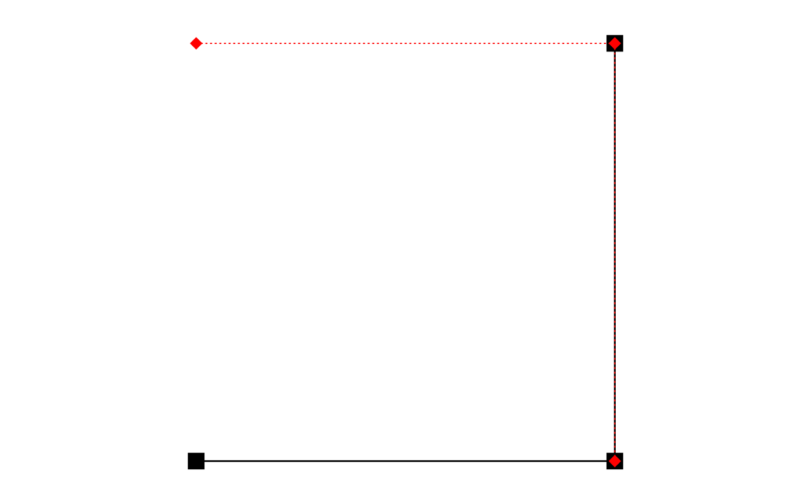
After snapping the POIs, we can use sf::st_join() as expected.
st_join(net, snapped_pois)#> # A sfnetwork with 2 nodes and 1 edges
#> #
#> # CRS: NA
#> #
#> # A rooted tree with spatially explicit edges
#> #
#> # Node Data: 2 x 2 (active)
#> # Geometry type: POINT
#> # Dimension: XY
#> # Bounding box: xmin: 0 ymin: 0 xmax: 1 ymax: 0
#> x poi_type
#> <POINT> <chr>
#> 1 (0 0) bakery
#> 2 (1 0) butcher
#> #
#> # Edge Data: 1 x 3
#> # Geometry type: LINESTRING
#> # Dimension: XY
#> # Bounding box: xmin: 0 ymin: 0 xmax: 1 ymax: 0
#> from to x
#> <int> <int> <LINESTRING>
#> 1 1 2 (0 0, 1 0)
Blending points into a network
In the example above, it makes sense to include the information from the first POI in an already existing node. For the second POI, however, its nearest node is quite far away relative to the nearest location on its nearest edge. In that case, you might want to split the edge at that location, and add a new node to the network. For this combination process we use the metaphor of throwing the network and POIs together in a blender, and mix them smoothly together.
The function st_network_blend() does exactly that. For each POI, it finds the nearest location \(p\) on the nearest edge \(e\). If \(p\) is an already existing node (i.e. \(p\) is an endpoint of \(e\)), it joins the information from the POI into that node. If \(p\) is not an already existing node, it subdivides \(e\) at \(p\), adds \(p\) as a new node to the network, and joins the information from the POI into that new node. For this process, it does not matter if \(p\) is an interior point in the linestring geometry of \(e\).
NOTE: This function is still experimental. It needs more testing and may be slow on large networks
blended = st_network_blend(net, pois)
#> Warning: st_network_blend assumes attributes are constant over geometries
blended#> # A sfnetwork with 3 nodes and 2 edges
#> #
#> # CRS: NA
#> #
#> # A rooted tree with spatially explicit edges
#> #
#> # Node Data: 3 x 2 (active)
#> # Geometry type: POINT
#> # Dimension: XY
#> # Bounding box: xmin: 0 ymin: 0 xmax: 1 ymax: 0
#> x poi_type
#> <POINT> <chr>
#> 1 (0 0) bakery
#> 2 (0.6 0) butcher
#> 3 (1 0) NA
#> #
#> # Edge Data: 2 x 3
#> # Geometry type: LINESTRING
#> # Dimension: XY
#> # Bounding box: xmin: 0 ymin: 0 xmax: 1 ymax: 0
#> from to x
#> <int> <int> <LINESTRING>
#> 1 1 2 (0 0, 0.6 0)
#> 2 2 3 (0.6 0, 1 0)
plot(net, cex = 2, lwd = 4)
plot(pois, pch = 8, cex = 2, lwd = 2, add = TRUE)
plot(st_nearest_points(pois[1, ], activate(net, "edges")),
col = "grey", lty = 2, lwd = 2, add = TRUE)
plot(st_nearest_points(pois[2, ], activate(net, "edges")),
col = "grey", lty = 2, lwd = 2, add = TRUE)
plot(blended, cex = 2, lwd = 4)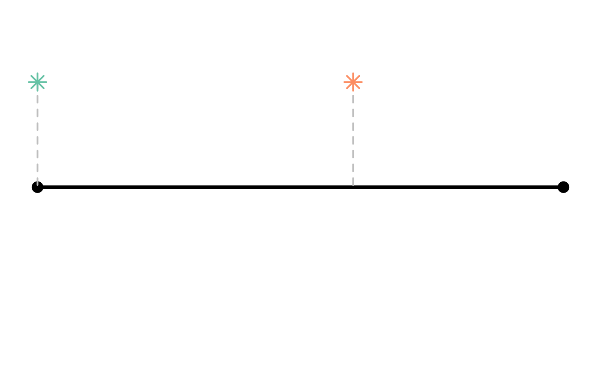
Joining two networks
In the examples above it was all about joining information from external features into a network. But how about joining two networks? This is what the st_network_join() function is for. It takes two sfnetworks as input and makes a spatial full join on the geometries of the nodes data, based on the equals spatial predicate. That means, all nodes from network x and all nodes from network y are present in the joined network, but if there were nodes in x with equal geometries to nodes in y, these nodes become a single node in the joined network. Edge data are combined using a dplyr::bind_rows() semantic, meaning that data are matched by column name and values are filled with NA if missing in either of the networks. The from and to columns in the edge data are updated automatically such that they correctly match the new node indices of the joined network. There is no spatial join performed on the edges. Hence, if there is an edge in x with an equal geometry to an edge in y, they remain separate edges in the joined network.
node3 = st_point(c(1, 1))
node4 = st_point(c(0, 1))
edge2 = st_sfc(st_linestring(c(node2, node3)))
edge3 = st_sfc(st_linestring(c(node3, node4)))
net = as_sfnetwork(c(edge, edge2))
other_net = as_sfnetwork(c(edge2, edge3))
joined = st_network_join(net, other_net)
joined#> # A sfnetwork with 4 nodes and 4 edges
#> #
#> # CRS: NA
#> #
#> # A directed acyclic multigraph with 1 component with spatially explicit edges
#> #
#> # Node Data: 4 x 1 (active)
#> # Geometry type: POINT
#> # Dimension: XY
#> # Bounding box: xmin: 0 ymin: 0 xmax: 1 ymax: 1
#> x
#> <POINT>
#> 1 (0 0)
#> 2 (1 0)
#> 3 (1 1)
#> 4 (0 1)
#> #
#> # Edge Data: 4 x 3
#> # Geometry type: LINESTRING
#> # Dimension: XY
#> # Bounding box: xmin: 0 ymin: 0 xmax: 1 ymax: 1
#> from to x
#> <int> <int> <LINESTRING>
#> 1 1 2 (0 0, 1 0)
#> 2 2 3 (1 0, 1 1)
#> 3 2 3 (1 0, 1 1)
#> # … with 1 more row
plot(net, pch = 15, cex = 2, lwd = 4)
plot(other_net, col = "red", pch = 18, cex = 2, lty = 2, lwd = 4, add = TRUE)
plot(joined, cex = 2, lwd = 4)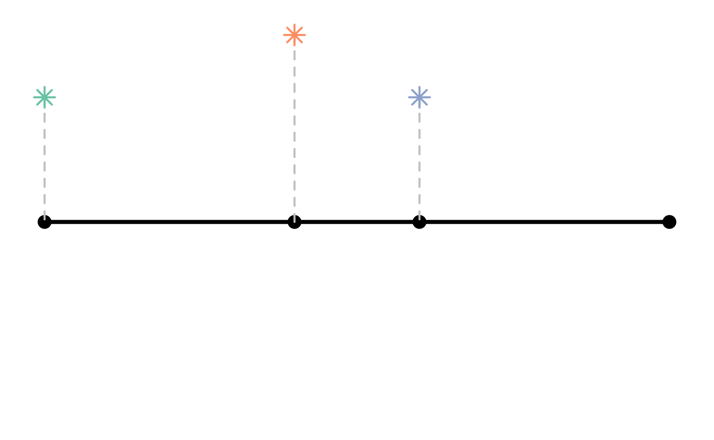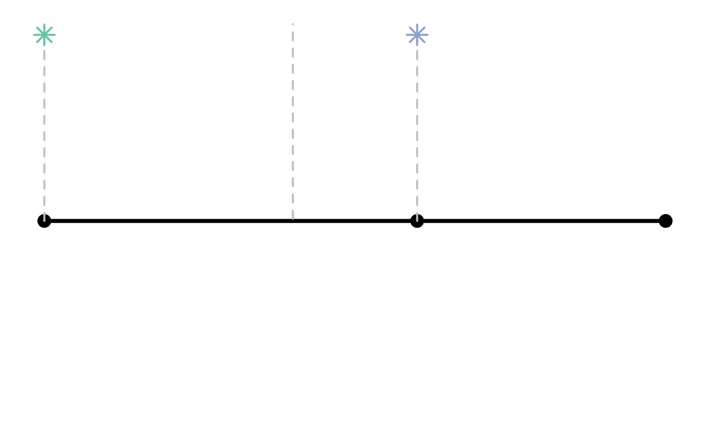